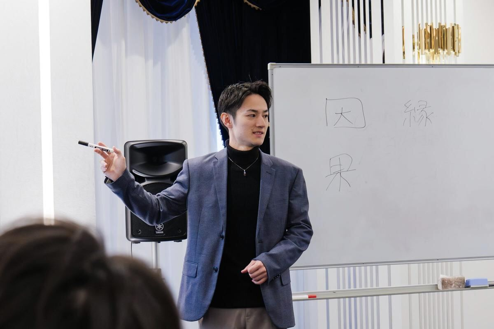

- 1,000名以上これまでに鑑定した方の数
経営者・個人事業主・管理職など
（2025年12月）

未来を 当てるのではなく 自分を 知るための90分
生年月日から見る
一生変わらないあなたの宿命
自分のことを知ると
これから何を選ぶのかが少し見えてくる
質問ですあなたは 自分のことを
どれくらい知っていますか？
17.4%
0%100%
「自分のことを理解できている」と
明確に答えた人は 17.4%
自分のことは
意外と自分では分かっていません
だからこそ
一度 自分のことを知ってみる
2025年8月／20〜50代の働く男女500名
株式会社ジコリカイ調査 PR TIMES
もっと知る
よくある質問
占いが初めてでも大丈夫ですか？
もちろん大丈夫です KAGAMIでは 未来を当てることだけを目的にしていません 自分のことを知るところから 一緒に見ていきます
どんなことを相談できますか？
仕事 人間関係 恋愛 結婚 これからのことなど 今気になっていることを何でも相談してください 宿命をお伝えしたうえで 今の状況を一緒に整理していきます 医療・法律・投資に関する助言は行っていません
鑑定には何が必要ですか？
氏名・性別・生年月日をご用意ください 出生地や出生時刻は必要ありません
鑑定後にも相談できますか？
鑑定中に 気になることは何でも聞いてください 90分の中で 今抱えていることや これから考えていることも一緒に整理します 鑑定のあとに疑問が出てきたときは 公式LINEから質問できます
まだ鑑定を受けるか迷っています
まだ 鑑定を受けるか迷っている方は まず話してみてください 無料相談では KAGAMIの鑑定が今のあなたに合っているかを確認します 無理におすすめすることはありません無料相談はこちら（公式LINE）
申し込み後はどうなりますか？
フォームの入力後に 振込先をご案内します ご入金の確認後 公式LINEで日程を調整し オンライン（Zoom）で90分の鑑定を行います 鑑定後に 鑑定書（PDF）をお渡しします
先に振り込むのが不安です
お振込みから1ヶ月以内に当方からご連絡が取れない場合は 鑑定を実施せず 全額をご返金します 返金にかかる振込手数料も当方が負担します
キャンセルや日程変更はできますか？
鑑定日の前日までにご連絡いただければ 日程変更についてご相談いただけます 日程確定後のお客様都合によるキャンセル・返金については特定商取引法に基づく表記をご確認ください
オンラインでも受けられますか？
はい 現在はすべてオンライン（Zoom）で行っています
鑑定書はいつもらえますか？
鑑定後に 「一生変わらないあなたの宿命」をまとめた鑑定書（PDF）をお渡しします
未来を予言してもらえますか？
KAGAMIは 未来を当てることを目的としていません 自分のことを知り これからの選択を考えるために算命学を使います
最後に僕から
この90分には
自信があります
これまでたくさんの方の宿命を見て
その人が自分でも気づいていなかったことを
伝えてきました
自分のことを知るだけで
仕事のこと 人間関係のこと
これからの選択
見え方が変わる人を 何人も見てきました
あなたの人生を 僕が変えることはできません
最後に決めるのは あなたです
それでも
一生変わらない自分を知って
これからの人生を自分で選んでいく
そのための90分なら
僕は誰にも負けない自信があります
90分
僕に預けてください
林竜輔
一生変わらない自分を知る
未来を当てるためではなく
これから自分で選んでいくために